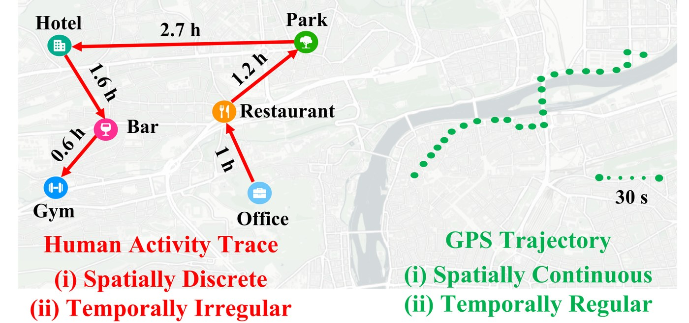
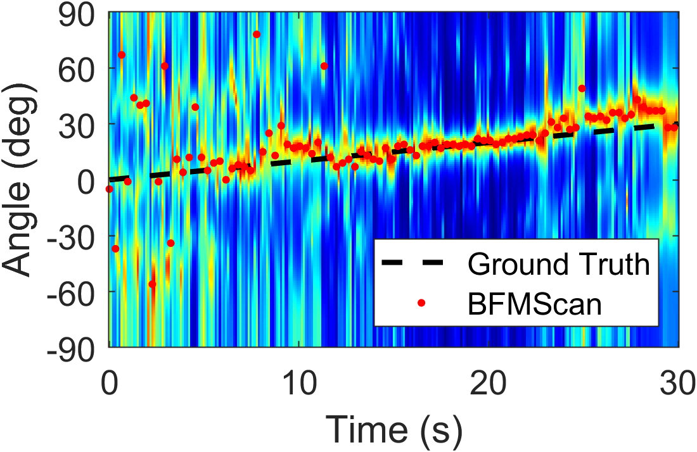

Ubiquitous Intelligence & Computing Group
-

SynHAT
A Two-stage Coarse-to-Fine Diffusion Framework for Synthesizing Human Activity Traces
DCS Lab DOI 10.1145/3810213
-

BFMScan
Enabling Explicit Angle-Resolved Sensing via Beamforming Feedback Matrix
XL-Stack Lab DOI 10.1145/3832009
-

MURAL-Fi
Multi-User Respiration Authentication Leveraging WiFi
XL-Stack Lab DOI 10.1145/3790111